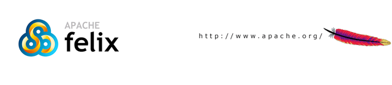

Apache Felix Karaf
Users' Guide
Copyright 2009 The Apache Software Foundation
Table of contents
- 1. Overview
- 2. Quick start
- 2.1. Quick Start (Source)
- 3. Installation
- 4. Understanding Karaf
- 4.1. Console and Commands
- 4.2. Remote Console
- 4.3. Logging system
- 4.4. Deployer
- 4.5. Security framework
- 4.6. Provisioning
- 4.7. Administration
- 4.8. Configuration
- 5. Using Karaf
- 5.1. Troubleshooting, Debugging and Profiling
- 5.2. Developping applications
- 5.3. Creating bundles for third party dependencies
- 6. Advanced uses
- 6.1. Extending the console
- 6.2. Building custom distributions
- 6.3. Programmatically connect to the console
- 6.4. Embedding Karaf
- 6.5. Deploying security providers
- 6.6. Installing additional features
- 6.7. Configuring Failover Deployments
- 7. Optional Features
- 7.1. Enabling Colorized Console Output On Windows
1. Overview
Apache Felix Karaf is a small OSGi based runtime which provides a lightweight container onto which various components and applications can be deployed.
Here is a short list of features supported by the Karaf:
- Hot deployment: Karaf supports hot deployment of OSGi bundles by monitoring jar files inside the [home]/deploy directory. Each time a jar is copied in this folder, it will be installed inside the runtime. You can then update or delete it and changes will be handled automatically. In addition, the Karaf also supports exploded bundles and custom deployers (blueprint and spring ones are included by default).
- Dynamic configuration: Services are usually configured through the ConfigurationAdmin OSGi service. Such configuration can be defined in Karaf using property files inside the [home]/etc directory. These configurations are monitored and changes on the properties files will be propagated to the services.
- Logging System: using a centralized logging back end supported by Log4J, Karaf supports a number of different APIs (JDK 1.4, JCL, SLF4J, Avalon, Tomcat, OSGi)
- Provisioning: Provisioning of libraries or applications can be done through a number of different ways, by which they will be downloaded locally, installed and started.
- Native OS integration: Karaf can be integrated into your own Operating System as a service so that the lifecycle will be bound to your Operating System.
- Extensible Shell console: Karaf features a nice text console where you can manage the services, install new applications or libraries and manage their state. This shell is easily extensible by deploying new commands dynamically along with new features or applications.
- Remote access: use any SSH client to connect to Karaf and issue commands in the console
- Security framework based on JAAS
- Managing instances: Karaf provides simple commands for managing multiple instances. You can easily create, delete, start and stop instances of Karaf through the console.
- Supports the latest OSGi 4.2 containers: Apache Felix Framework 2.0.0 and Eclipse Equinox 3.5

2. Quick start
If you are in a hurry to have Apache Felix Karaf up and running right away, this section will provide you with some basic steps for downloading, building (when needed) and running the server in no time. This is clearly not a complete guide so you may want to check other sections of this guide for further information.
All you need is 5 to 10 minutes and to follow these basic steps.
Background
Apache Felix Karaf is a small and lightweight OSGi based runtime. This provides a small lightweight container onto which various bundles can be deployed.
| Apache Felix Karaf started life as the Apache ServiceMix kernel. Don't be surprised by any transitional references which remain. |
Getting the software
At this time you have one option to get the software. The fastest and easiest way is to get the binary directly from the Apache site. Since this article is intended to help you to have Apache Felix Karaf up and running in the fastest way only the binary download will be covered at this time.
Prerequisites
Although this installation path is the fastest one, still you will need to install some software before installing Karaf.
Karaf requires a Java 5 environment to run. Refer to http://java.sun.com for details on how to download and install J2SE 1.5 or greater.
Download binaries
Depending on the platform you plan to install and run Karaf you will select the appropriate installation image. Open a Web browser and access the following URL, there you will find the available packages for download (binaries and source code).
http://felix.apache.org/site/downloads.cgi
Select the file compression format compatible with your system (zip for windows, tar.gz for unixes) by clicking directly on the link, download it and expand the binary to your hard drive in a new directory; for example in z:\servicemix - from now on this directory will be referenced as <KARAF_HOME>. Please remember the restrictions concerning illegal characters in Java paths, e.g. !, % etc.
The installation of Karaf is as simple as uncompressing the .zip or .tar files. The next step is to start the server.
Start the server
With Karaf already installed, open a command line console and change directory to <SERVICEMIX_HOME>. To start the server, run the following command in Windows:
bin\karaf.bat
respectively on Unix:
bin/karaf
You should see the following informations on the command line console:
__ __ ____
/ //_/____ __________ _/ __/
/ ,< / __ `/ ___/ __ `/ /_
/ /| |/ /_/ / / / /_/ / __/
/_/ |_|\__,_/_/ \__,_/_/
Apache Felix Karaf (1.0.0)
Hit '<tab>' for a list of available commands
and '[cmd] --help' for help on a specific command.
karaf@root>
You can now run your first command. Simply type the <tab> key in the console.
karaf@root> admin:change-port admin:connect admin:create admin:destroy admin:list admin:start admin:stop config:cancel config:edit config:list config:propappend config:propdel config:proplist config:propset config:update features:addUrl features:install features:list features:listUrl features:refreshUrl features:removeUrl features:uninstall log:display log:display-exception log:get log:set osgi:bundle-level osgi:headers osgi:install osgi:list osgi:ls osgi:refresh osgi:resolve osgi:restart osgi:shutdown osgi:start osgi:start-level osgi:stop osgi:uninstall osgi:update packages:exports packages:imports shell:cat shell:echo shell:exec shell:grep shell:info shell:java shell:printf shell:sleep shell:sort shell:tac ssh:ssh ssh:sshd karaf@root>
You can then grab more specific help for a given command using the --help option for this command:
karaf@root> admin:create --help DESCRIPTION admin:create Create a new instance. SYNTAX admin:create [options] [VAL] ARGUMENTS VAL Name of the new Karaf instance OPTIONS -p, --port Port number for remote shell connection --help Display this help message -l, --location Location of the new instance on the file system karaf@root>
Note that the console supports tab completion, so you just need to enter ad <tab> cr <tab> instead of admin:create.
top
Deploy a sample application
While you will learn in the remainder of this guide how to use and leverage Apache Felix Karaf, we will just use the pre-built packaging for now.
In the console, run the following commands:
features:install spring-dm osgi:install -s mvn:org.apache.geronimo.specs/geronimo-activation_1.1_spec/1.0.2 osgi:install -s mvn:org.apache.servicemix.specs/org.apache.servicemix.specs.stax-api-1.0/1.1.0 osgi:install -s mvn:org.apache.servicemix.specs/org.apache.servicemix.specs.jaxb-api-2.1/1.1.0 osgi:install -s mvn:org.apache.servicemix.bundles/org.apache.servicemix.bundles.jaxb-impl/2.1.6_1 osgi:install -s mvn:org.apache.camel/camel-core/1.4.0 osgi:install -s mvn:org.springframework/spring-tx/2.5.6.SEC01 osgi:install -s mvn:org.apache.camel/camel-spring/1.4.0 osgi:install -s mvn:org.apache.camel/camel-osgi/1.4.0 osgi:install -s mvn:org.apache.camel/camel-example-osgi/1.4.0
This commands will download, install and start the specified jars.
The example installed is using Camel to start a timer every 2 seconds and output a message on the console.
>>>> MyTransform set body: Wed Jan 02 23:34:19 CET 2008 >>>> MyTransform set body: Wed Jan 02 23:34:21 CET 2008
Stopping and uninstalling the sample application
To stop this demo, run the following command:
osgi:list | grep example
In the output, locate the line containing camel-example-osgi and note the id of the bundle in the first column. Then launch the following command:
osgi:stop [id]
If you wish, you can start again the sample by using the following command:
osgi:start [id]
To uninstall the demo, run the following command:
osgi:uninstall [id]
Common Problems
- Launching Karaf can result in a deadlock in Felix during module dependency resolution. This is often a result of sending a SIGINT (control-C) to the process when it will not cleanly exit. This can corrupt the caches and cause startup problems in the very next launch. It is fixed by emptying the component cache:
rm -rf data/cache/*
Stopping Karaf
To stop Karaf from the console, enter ^D in the console:
^D
Alternatively, you can also run the following command:
osgi:shutdown
Summary
This document showed you how simple it is to have Apache Felix Karaf up and running. The overall time for getting the server running should be less than five minutes if you have the prerequisite (Java 1.5) already installed. Additionally, this article also showed you how to deploy and test a simple Apache Camel application in less than five minutes.
2.1. Quick Start (Source)
If you are in a hurry to have Apache Felix Karaf up and running right away, this section will provide you with some basic steps for checking out, building and running the server in no time. This is clearly not a complete guide so you may want to check other sections of this guide for further information.
All you need is 15 minutes and to follow these basic steps.
Background
Apache Felix Karaf is a small and lightweight OSGi based runtime. This provides a small lightweight container onto which various bundles can be deployed.
| Apache Felix Karaf started life as the Apache ServiceMix kernel. Don't be surprised by any transitional references which remain. |
Getting the software
This document describes how to build the server from the latest Karaf source.
Prerequisites
Although this installation path is the fastest one, still you will need to install some software before installing Karaf.
Karaf requires a Java 5 environment to run. Refer to http://java.sun.com for details on how to download and install J2SE 1.5 or greater.
Subversion is required to checkout the source.
Maven 2 is required to build Karaf.
Checkout Source
The Karaf source is found at http://svn.apache.org/repos/asf/felix/trunk/karaf/. To check out with a command line client:
$ svn co http://svn.apache.org/repos/asf/felix/trunk/karaf/
Build
Change directory to the top level of the source checkout. Build Karaf using Maven as follows:
$ mvn -Pfastinstall
Distributions will be created in assembly/target. Select the file compression format compatible with your system (apache-felix-karaf-1.0.0.zip for windows, apache-felix-karaf-1.0.0.tar.gz for unixes) and expand the binary in a new directory; for example in z:\karaf - from now on this directory will be referenced as <KARAF_HOME>. Please remember the restrictions concerning illegal characters in Java paths, e.g. !, % etc.
The installation of Karaf is as simple as uncompressing the .zip or .tar files. The next step is to start the server.
| To generate Eclipse projects for all modules, in KARAF_HOME type:
mvn -Psetup.eclipse Then add each module location, prefixing each name with org.apache.felix.karaf (for example org.apache.felix.karaf.shell.core) |
Start the server
With Karaf already installed, open a command line console and change directory to <KARAF_HOME>. To start the server, run the following command in Windows:
bin\karaf.bat
respectively on Unix:
bin/karaf
You should see the following informations on the command line console:
__ __ ____
/ //_/____ __________ _/ __/
/ ,< / __ `/ ___/ __ `/ /_
/ /| |/ /_/ / / / /_/ / __/
/_/ |_|\__,_/_/ \__,_/_/
Apache Felix Karaf (1.0.0)
Hit '<tab>' for a list of available commands
and '[cmd] --help' for help on a specific command.
karaf@root>
You can now run your first command. Simply type the <tab> key in the console.
karaf@root> admin:change-port admin:connect admin:create admin:destroy admin:list admin:start admin:stop config:cancel config:edit config:list config:propappend config:propdel config:proplist config:propset config:update features:addUrl features:install features:list features:listUrl features:refreshUrl features:removeUrl features:uninstall log:display log:display-exception log:get log:set osgi:bundle-level osgi:headers osgi:install osgi:list osgi:ls osgi:refresh osgi:resolve osgi:restart osgi:shutdown osgi:start osgi:start-level osgi:stop osgi:uninstall osgi:update packages:exports packages:imports shell:cat shell:echo shell:exec shell:grep shell:info shell:java shell:printf shell:sleep shell:sort shell:tac ssh:ssh ssh:sshd karaf@root>
Deploy a sample application
While you will learn in the remainder of this guide how to use and leverage Apache Felix Karaf, we will just use the pre-built packaging for now.
In the console, run the following commands:
features:install spring-dm osgi:install -s mvn:org.apache.geronimo.specs/geronimo-activation_1.1_spec/1.0.2 osgi:install -s mvn:org.apache.servicemix.specs/org.apache.servicemix.specs.stax-api-1.0/1.1.0 osgi:install -s mvn:org.apache.servicemix.specs/org.apache.servicemix.specs.jaxb-api-2.1/1.1.0 osgi:install -s mvn:org.apache.servicemix.bundles/org.apache.servicemix.bundles.jaxb-impl/2.1.6_1 osgi:install -s mvn:org.apache.camel/camel-core/1.4.0 osgi:install -s mvn:org.springframework/spring-tx/2.5.6.SEC01 osgi:install -s mvn:org.apache.camel/camel-spring/1.4.0 osgi:install -s mvn:org.apache.camel/camel-osgi/1.4.0 osgi:install -s mvn:org.apache.camel/camel-example-osgi/1.4.0
This commands will download, install and start the specified jars.
The example installed is using Camel to start a timer every 2 seconds and output a message on the console.
>>>> MyTransform set body: Wed Jan 02 23:34:19 CET 2008 >>>> MyTransform set body: Wed Jan 02 23:34:21 CET 2008
Stopping and uninstalling the sample application
To stop this demo, run the following command:
osgi:list | grep example
In the output, locate the line containing camel-example-osgi and note the id of the bundle in the first column. Then launch the following command:
osgi:stop [id]
If you wish, you can start again the sample by using the following command:
osgi:start [id]
To uninstall the demo, run the following command:
osgi:uninstall [id]
Common Problems
- Launching SMX4 can result in a deadlock in Felix during module dependency resolution. This is often a result of sending a SIGINT (control-C) to the process when it will not cleanly exit. This can corrupt the caches and cause startup problems in the very next launch. It is fixed by emptying the component cache:
rm -rf data/cache/*
Stopping Karaf
To stop Karaf from the console, enter ^D in the console:
^D
Alternatively, you can also run the following command:
osgi:shutdown
Summary
This document showed you how simple it is to have Apache Felix Karaf up and running. The overall time for getting the server running should be less than five minutes if you have the prerequisite (Java 1.5) already installed. Additionally, this article also showed you how to deploy and test a simple Apache Camel application in less than five minutes.
3. Installation
This document describes how to install and configure Apache Felix Karaf for both Unix and Windows' platforms.
Here you will find information about what are pre requisite software, where to download Karaf from and how to customize the installation to use custom ports other than the defaults.
This article contains the following sections:
Pre-Installation Requirements
Hardware:
- 5 MB of free disk space for the Apache Felix Karaf x.y binary distribution.
- 3 MB of free disk space for the Apache Felix Karaf x.y source distributions or SVN checkout. The Maven build requires roughly 57 MB disk space and for the dependencies Maven downloads during building further 76 MB are required. As a lot of small files are produced, the exact space demands depend greatly on your cluster utilization ratio.
Operating Systems:
- Windows: Windows XP SP2, Windows 2000.
- Unix: Ubuntu Linux, Powerdog Linux, MacOS, AIX, HP-UX, Solaris, any Unix platform that supports Java.
Environment:
- Java Developer Kit (JDK) 1.5.x or greater (http://java.sun.com/).
- The JAVA_HOME environment variable must be set to the directory where the JDK is installed, e.g., c:\Program Files\jdk.1.5.0_06. To accomplish that, press Windows key and Break key together, switch to "Advanced" tab and click on "Environment Variables". Here, check for the variable and, if necessary, add it.
- Apache Maven 2.0.8 (http://maven.apache.org/download.html).
Installation Procedure for Windows
This section of the Getting Started guide explains how to install binary and source distributions of Karaf on a Windows system.
| Handy Hint In case you have to install Karaf into a very deep path or a path containing illegal characters for Java paths, e.g. !, % etc., you may add a bat file to start -> startup that executes subst S: "C:\your very % problematic path!\KARAF" so your Karaf root directory is S: — which works for sure and is short to type. |
Windows Binary Installation
This procedure explains how to download and install the binary distribution on a Windows system.
- From a browser, navigate to http://felix.apache.org/site/downloads.cgi.
- Scroll down to the "Apache Felix Karaf" section and select the desired distribution.
For a binary distribution, the filename will be similar to: apache-felix-karaf-x.y.zip. - Extract the files from the ZIP file into a directory of your choice. Please remember the restrictions concerning illegal characters in Java paths, e.g. !, % etc.
- Proceed to the Starting Karaf section of this document.
- Following start-up, go to the Testing the Installation section of this document.
- Optional: see 7.1. Enabling Colorized Console Output On Windows
Windows Source Installation
This procedure explains how to download and install the source distribution on a Windows system. NOTE: Karaf requires Java 5 is compile, build and run.
- From a browser, navigate to http://felix.apache.org/site/downloads.cgi.
- Scroll down to the "Apache Felix Karaf" section and select the desired distribution.
For a source distribution, the filename will be similar to: apache-felix-karaf-x.y-src.zip. - Extract Karaf from the ZIP file into a directory of your choice. Please remember the restrictions concerning illegal characters in Java paths, e.g. !, % etc.
- Build Karaf using Maven 2.0.8 or greater and Java 5.
The recommended method of building Karaf is the following:cd [karaf_install_dir]\\src
where [karaf_install_dir] is the directory in which Karaf was installed.
mvn
Both steps take around 10 to 15 minutes.
- Unzip the distribution using your favorite zip tool. The windows distribution is available at
[karaf_install_dir]\assembly\target\apache-felix-karaf-x.y.zip
- Proceed to the Starting Karaf section of this document.
- Following start-up, go to the Testing the Installation section of this document.
- Optional: see 7.1. Enabling Colorized Console Output On Windows
Installation Procedure For Unix
Unix Binary Installation
This procedure explains how to download and install the binary distribution on a Unix system.
- From a browser, navigate to http://felix.apache.org/site/downloads.cgi.
- Scroll down to the "Apache Felix Karaf" section and select the desired distribution.
For a binary Unix distribution, the filename will be similar to: apache-felix-karaf-x.y.tar.gz. - Extract the files from the gzip file into a directory of your choice. For example:
gunzip apache-felix-karaf-x.y.tar.gz tar xvf apache-felix-karaf-x.y.tar
Please remember the restrictions concerning illegal characters in Java paths, e.g. !, % etc.
- Proceed to the Starting Karaf section of this document.
- Following start-up, go to the Testing the Installation section.
Unix Source Installation
This procedure explains how to download and install the source distribution on a Unix system. This procedure assumes the Unix machine has a browser. Please see the previous Unix Binary Installation section for ideas on how to install Karaf without a browser. NOTE: Karaf requires Java 5 to compile, build and run.
- From a browser, navigate to http://felix.apache.org/site/downloads.cgi.
- Scroll down to the "Apache Felix Karaf" section and select the desired distribution.
For a source distribution, the filename will be similar to: apache-felix-karaf-x.y-src.tar.gz. - Extract the files from the ZIP file into a directory of your choice. For example:
gunzip apache-felix-karaf-x.y-src.tar.gz tar xvf apache-felix-karaf-x.y-src.tar
Please remember the restrictions concerning illegal characters in Java paths, e.g. !, % etc.
- Build Karaf using Maven 2.0.8 or greater and Java 5:
The preferred method of building Karaf is the following: cd [karaf_install_dir]/src where [karaf_install_dir] is the directory in which Karaf was installed. mvn
- Uncompress the distribution that has just been created
cd [karaf_install_dir]/assembly/target gunzip apache-felix-karaf-x.y.tar.gz tar xvf apache-felix-karaf-x.y.tar
- Proceed to the Starting Karaf section of this document.
- Following start-up, go to the Testing the Installation section.
Starting Karaf
On Windows
From a console window, change to the installation directory and run Karaf. For the binary distribution, go to
cd [karaf_install_dir]
and for the source distribution go to the target directory, for example:
cd [karaf_install_dir]\src\assembly\target\apache-felix-karaf-x.y-SNAPSHOT
where karaf_install_dir is the directory in which Karaf was installed, e.g., c:\Program Files\apache-felix-karaf-x.y.
Then type:
bin\karaf.bat
Note: Working directories get created relative to the current directory. For the working directories to be created in the proper place, Karaf must be launched from its home/installation directory.
On Unix
From a command shell, change to the installation directory and run Karaf. For the binary distribution, go to
cd [karaf_install_dir]
and for the source distribution go to the target directory, for example:
cd [karaf_install_dir]/src/assembly/target/apache-felix-karaf-x.y
where karaf_install_dir is the directory in which Karaf was installed, e.g., /usr/local/apache-felix-karaf-x.y.
Then type:
bin/karaf.sh
| Warning Do NOT close the console or shell in which Karaf was started, as that will terminate Karaf (unless Karaf was started with nohup). |
Testing the Installation
If Karaf is up and running without problems, the Window's console window or the Unix command shell will display something similar to the following log line:
__ __ ____
/ //_/____ __________ _/ __/
/ ,< / __ `/ ___/ __ `/ /_
/ /| |/ /_/ / / / /_/ / __/
/_/ |_|\__,_/_/ \__,_/_/
Apache Felix Karaf (1.0.0)
Hit '<tab>' for a list of available commands
and '[cmd] --help' for help on a specific command.
karaf@root>
Stopping Karaf
For both Windows and Unix installations, you can perform a clean shutdown of Karaf Kernel by using the following command:
osgi:shutdown
If Karaf was started in the background on Unix, the process can be killed, with the following:
ps -ef | grep karaf kill [PID] where [PID] is the process id of the Karaf process.
4. Understanding Karaf
- 4.1. Console and Commands
- 4.2. Remote Console
- 4.3. Logging system
- 4.4. Deployer
- 4.5. Security framework
- 4.6. Provisioning
- 4.7. Administration
- 4.8. Configuration
4.1. Console and Commands
Overview
Karaf provides a powerful console and a set of commands that can be used to perform various tasks. Commands can be located in the root shell or in a sub-shell. A sub-shell is a group of related commands, like commands related to the OSGi framework or the log system.
The following shells are available out-of-the-box, but the console can be easily extended:
Admin shell
This shell is described extensively in section 4.7. Administration.
Config shell
This shell is described extensively in section 4.8. Configuration.
Features shell
The features shell contains a few commands to provision entire applications easily.
More information is available on the chapter 4.6. Provisioning.
Log shell
The log shell contains a few commands to display the log entries, retrieve or change the log levels:
| Command | Description |
|---|---|
| display | Display log entries. |
| display-exception | Display the last exception from the log. |
| get | Show log level. |
| set | Set log level. |
See the documentation on the logging system for more informations.
OBR shell
OBR (OSGi Bundle Repository) is a proposed specification that defines an xml format for repositories of OSGi bundles and an associated service to access it. Karaf proposes a number of commands that can be used to deal with such repositories.
Note that this feature is not installed by default. To install it, you must run the following command:
karaf@root:/> features:install obr
| Command | Description |
|---|---|
| addUrl | Add a list of repository URLs to the repository service |
| deploy | Deploy |
| info | Display the meta-data for the specified bundles. |
| list | List |
| listUrl | Display the repository URLs currently associated with the repository service. |
| removeUrl | Remove a list of repository URLs from the repository service |
| source | Source |
| start | Start |
OSGi shell
The OSGi sub-shell provides commands for managing the OSGi framework: listing OSGi bundles, services, managing bundle lifecycles.
Look at the online help (launch osgi help command) for more informations.
| Command | Description |
|---|---|
| bundle-level | Get or set the start level of a given bundle |
| headers | Display headers |
| install | Install bundle |
| list | List bundles |
| ls | List services |
| refresh | Refresh bundle |
| update | Update bundle |
| resolve | Resolve bundle |
| shutdown | Shutdown |
| start | Start bundle |
| start-level | Get or set the start level |
| stop | Stop bundle |
| uninstall | Uninstall bundle |
Package shell
| Command | Description |
|---|---|
| imports | Display imported packages |
| exports | Display exported packages |
Shell shell
| Command | Description |
|---|---|
| cat | Displays the content of a file or url |
| echo | Echoes or prints arguments to STDOUT |
| exec | Executes system processes |
| grep | Prints lines matching the given pattern |
| info | Prints system informations |
| java | Execute a Java standard application |
| printf | Format and print arguments |
| sleep | Sleeps for a bit then wakes up |
| sort | Write sorted concatenation of all files to standard output. |
| tac | Captures the STDIN and returns it as a string. Optionally writes the content to a file |
Examples:
cat mvn:org.apache.servicemix/servicemix/3.2.1/pom
or
log:display | grep error
SSH shell
| Command | Description |
|---|---|
| ssh | Connects to a remote SSH server |
| sshd | Creates a SSH server |
Wrapper shell
Note that this feature is not installed by default. To install it, you must run the following command:
karaf@root:/> features:install wrapper
| Command | Description |
|---|---|
| install | Install the container as a system service in the OS. |
4.2. Remote Console
The remote console feature allows to connect to a running Karaf instance from a remote computer and perform all the operations that are usually accessible from the local console.
Launch options
The Karaf shell scripts supports a number of options to control the remote console:
- console: launch Karaf in the default mode (both local and remote console activated). This is the default mode
- server: launch Karaf in with a remote console but no local console
- client: launch Karaf in with a local console only
These options affect two system properties that can be set if you don't use the standard shell scripts:
- karaf.startLocalConsole
- karaf.startRemoteShell
Using the client jar
It is also possible to use a more lightweight way to connect to a Karaf instance using the following command line:
java -jar lib/karaf-client.jar
There are a few parameters that can be set on the command line to change the URL used to connect to the Kernel, the user or the password.
All these parameters are detailed in the help screen:
> java -jar lib/karaf-client.jar --help
Apache Felix Karaf client
-a [address] specify the URL to connect to
-h [host] specify the host to connect to
-u [user] specify the user name
-p [password] specify the password
--help shows this help message
[commands] commands to run
If no commands are specified, the client will be put in an interactive mode
For example, to shut down the Kernel from the command line, you can run the following command:
> java -jar lib/karaf-client.jar smx@root:/> osgi:shutdown smx@root:/> >
The client jar also supports passing command line arguments to the remote Karaf.
> java -jar lib/karaf-client.jar osgi:shutdown >
Using an SSH client
You can use any standard SSH client to connect to a Karaf instance. The default port is 8101.
> ssh -p 8101 -l karaf localhost karaf@localhost's password: karaf karaf@root:/>
Using another Karaf instance
First, open a terminal and launch Karaf in server mode (you could use a Karaf instance in console mode too):
bin/karaf server
On another terminal, start another Karaf instance in client mode:
bin/karaf client
| User another Karaf instance to start the client At this point in time, you can not use the same Karaf installation to start both the server and the client, so you need to create a new instance using the 'admin create xxx' command and use that one to start the client. If you are on a different host or already use another copy of Karaf, this requirement does not hold. |
Once the console appears, you can run the remote rsh command to connect to the other Kernel:
remote rsh tcp://localhost:8101/ -u karaf -p karaf
You can also do that in a single command line from the prompt by appending the previous ServiceMix command to the shell command:
bin/karaf client remote rsh tcp://localhost:8101/ -u karaf -p karaf
To verify that your are connected to the remote instance, run the following command:
info
and check the system informations.
Configuration
The TCP port is configured at the following location:
[KARAF]/etc/org.apache.felix.karaf.shell.cfg
The defaut configuration is as below:
startLocalConsole=${karaf.startLocalConsole}
startRemoteShell=${karaf.startRemoteShell}
sshPort=8101
sshRealm=karaf
hostKey=${karaf.base}/etc/host.key
The port used can easily be changed by changing the default port 8101 in the sshPort property.
The security realm used by the console when authenticating remote users is named karaf, so you can override this realm as explained in the security section.
4.3. Logging system
Karaf provides a powerful logging system based on OPS4j Pax Logging.
In addition to being a standard OSGi Log service, it supports the following APIs:
- Apache Commons Logging
- SLF4J
- Apache Log4j
- Java Util Logging
Karaf also comes with a set of console commands that can be used to display, view and change the log levels.
Configuration
The configuration of the logging system uses a standard Log4j configuration file at the following location:
[karaf]/etc/org.ops4j.pax.logging.cfg
You can edit this file at runtime and any change will be reloaded and be effective immediately.
Commands
The log subshell comes with 3 commands:
- log:display: display the last log entries
- log:display-exception: display the last exception from the log
- log:get: show the log levels
- log:set: set the log levels
For example, if you want to debug something, you might want to run the following commands:
> log:set DEBUG
... do something ...
> log:display
Note that the log levels set using the log:set commands are not persistent and will be lost upon restart.
To configure those in a persistent way, you should edit the configuration file mentioned above.
top
4.4. Deployer
The following picture describes the architecture of the deployer.

Spring deployer
Karaf includes a deployer that is able to deploy plain spring / spring-dm configuration files.
The deployer will transform on the fly any spring configuration file dropped into the deploy folder into a valid OSGi bundle.
The generated OSGi manifest will contain the following headers:
Manifest-Version: 2 Bundle-SymbolicName: [name of the file] Bundle-Version: [version of the file] Spring-Context: *;publish-context:=false;create-asynchronously:=true Import-Package: [required packages] DynamicImport-Package: *
The name and version of the file are extracted using a heuristic that will match common patterns. For example my-config-1.0.1.xml will lead to name = my-config and version = 1.0.1.
The default imported packages are extracted from the spring file definition and includes all classes referenced directly.
If you need to customize the generated manifest, you can do so by including an xml element in your spring configuration:
<spring:beans ...> <manifest> Require-Bundle= my-bundle </manifest>
Features deployer
To be able to hot deploy features from the deploy folder, you can just drop a feature descriptor on that folder. A bundle will be created and its installation (automatic) will trigger the installation of all features contained in the descriptor. Removing the file from the deploy folder will uninstall the features.
If you want to install a single feature, you can do so by writing a feature descriptor like the following:
<features> <repository>mvn:org.apache.servicemix.nmr/apache-servicemix-nmr/1.0.0/xml/features</repository> <feature name="nmr-only"> <feature>nmr</feature> </feature> </features>
For more informations about features, see the provisioning section.
4.5. Security framework
Karaf supports JAAS with some enhancements to allow JAAS to work nicely in an OSGi environment. This framework also features an OSGi keystore manager with the ability to deploy new keystores or truststores at runtime.
Overview
This feature allow the deployment at runtime of JAAS based configuration for use in various parts of the application. This includes the remote console login, which uses the karaf realm, but which is configured with a dummy login module by default. These realms can also be used by the NMR, JBI components or the JMX server to authenticate users logging in or sending messages into the bus.
In addition to JAAS realms, you can also deploy keystores and truststores to secure the remote shell console, setting up HTTPS connectors or using certificates for WS-Security.
A very simple XML schema for spring has been defined, allowing the deployment of a new realm or a new keystore very easily.
Schema
To deploy a new realm, you can use the following XSD which is supported by a Spring namespace handler and can thus be defined in a spring xml configuration file.
<xs:schema elementFormDefault='qualified'
targetNamespace='http://felix.apache.org/karaf/xmlns/jaas/v1.0.0'
xmlns:xs='http://www.w3.org/2001/XMLSchema'
xmlns:bp="http://www.osgi.org/xmlns/blueprint/v1.0.0"
xmlns:tns='http://felix.apache.org/karaf/xmlns/jaas/v1.0.0'>
<xs:import namespace="http://www.osgi.org/xmlns/blueprint/v1.0.0"/>
<xs:element name="config">
<xs:complexType>
<xs:sequence>
<xs:element name="module" minOccurs="0" maxOccurs="unbounded">
<xs:complexType mixed="true">
<xs:attribute name="className" use="required" type="xs:string" />
<xs:attribute name="flags" default="required">
<xs:simpleType>
<xs:restriction base="xs:NMTOKEN">
<xs:enumeration value="required"/>
<xs:enumeration value="requisite"/>
<xs:enumeration value="sufficient"/>
<xs:enumeration value="optional"/>
</xs:restriction>
</xs:simpleType>
</xs:attribute>
</xs:complexType>
</xs:element>
</xs:sequence>
<xs:attribute name="name" use="required" type="xs:string" />
<xs:attribute name="rank" use="optional" default="0" type="xs:int" />
</xs:complexType>
</xs:element>
<xs:element name="keystore">
<xs:complexType>
<xs:attribute name="name" use="required" type="xs:string" />
<xs:attribute name="rank" use="optional" default="0" type="xs:int" />
<xs:attribute name="path" use="required" type="xs:string" />
<xs:attribute name="keystorePassword" use="optional" type="xs:string" />
<xs:attribute name="keyPasswords" use="optional" type="xs:string" />
</xs:complexType>
</xs:element>
</xs:schema>
You can find the schema at the following location.
Here are two example using this schema:
<blueprint xmlns="http://www.osgi.org/xmlns/blueprint/v1.0.0" xmlns:jaas="http://felix.apache.org/karaf/xmlns/jaas/v1.0.0" xmlns:ext="http://geronimo.apache.org/blueprint/xmlns/blueprint-ext/v1.0.0"> <!-- Bean to allow the $[karaf.base] property to be correctly resolved --> <ext:property-placeholder placeholder-prefix="$[" placeholder-suffix="]"/> <jaas:config name="karaf"> <jaas:module className="org.apache.felix.karaf.jaas.modules.properties.PropertiesLoginModule" flags="required"> users = $[karaf.base]/etc/users.properties </jaas:module> </jaas:config> </blueprint>
<jaas:keystore xmlns:jaas="http://felix.apache.org/karaf/xmlns/jaas/v1.0.0" id="keystore" name="ks" rank="1" path="classpath:privatestore.jks" keystorePassword="keyStorePassword" keyPasswords="myalias=myAliasPassword"> </jaas:keystore>
The id attribute is the blueprint id of the bean, but it will be used by default as the name of the realm if no name attribute is specified. Additional attributes on the config elements are a rank, which is an integer. When the LoginContext looks for a realm for authenticating a given user, the realms registered in the OSGi registry are matched against the required name. If more than one realm is found, the one with the highest rank will be used, thus allowing the override of some realms with new values. The last attribute is publish which can be set to false to not publish the realm in the OSGi registry, hereby disabling the use of this realm.
Each realm can contain one or more module definition. Each module identify a LoginModule and the className attribute must be set to the class name of the login module to use. Note that this login module must be available from the bundle classloader, so either it has to be defined in the bundle itself, or the needed package needs to be correctly imported. The flags attribute can take one of four values that are explained on the JAAS documentation.
The content of the module element is parsed as a properties file and will be used to further configure the login module.
Deploying such a code will lead to a JaasRealm object in the OSGi registry, which will then be used when using the JAAS login module.
Architecture
Due to constraints in the JAAS specification, one class has to be available for all bundles. This class is called ProxyLoginModule and is a LoginModule that acts as a proxy for an OSGi defines LoginModule. If you plan to integrate this feature into another OSGi runtime, this class must be made available from the system classloader and the related package be part of the boot delegation classpath (or be deployed as a fragment attached to the system bundle).
The xml schema defined above allow the use of a simple xml (leveraging spring xml extensibility) to configure and register a JAAS configuration for a given realm. This configuration will be made available into the OSGi registry as a JaasRealm and the OSGi specific Configuration will look for such services. Then the proxy login module will be able to use the information provided by the realm to actually load the class from the bundle containing the real login module.
4.6. Provisioning
Karaf provides a simple, yet flexible, way to provision applications or "features". Such a mechanism is mainly provided by a set of commands available in the features shell. The provisioning system uses xml "repositories" that define a set of features.
Repositories
The xml repositories use the following Relax NG Compact syntax:
element features {
element repository { text }*
element feature {
attribute name { text },
attribute version { text },
element feature {
attribute version { text },
text
}*,
element config {
attribute name { text },
text
}*,
element bundle { text }*
}*
}
Here is an example of such a repository:
<features> <feature name="spring" version="2.5.6.SEC01"> <bundle>mvn:org.apache.servicemix.bundles/org.apache.servicemix.bundles.aopalliance/1.0_1</bundle> <bundle>mvn:org.springframework/spring-core/2.5.6.SEC01</bundle> <bundle>mvn:org.springframework/spring-beans/2.5.6.SEC01</bundle> <bundle>mvn:org.springframework/spring-aop/2.5.6.SEC01</bundle> <bundle>mvn:org.springframework/spring-context/2.5.6.SEC01</bundle> <bundle>mvn:org.springframework/spring-context-support/2.5.6.SEC01</bundle> </feature> </features>
A repository includes a list of feature elements, each one representing an application that can be installed. The feature is identified by its name which must be unique amongst all the repositories used and consists of a set of bundles that need to be installed along with some optional dependencies on other features and some optional configurations for the Configuration Admin OSGi service.
Bundles
The main information provided by a feature is the set of OSGi bundles that defines the application. Such bundles are URLs pointing to the actual bundle jars. For example, one would write the following definition:
<bundle>http://repo1.maven.org/maven2/org/apache/servicemix/nmr/org.apache.servicemix.nmr.api/1.0.0-m2/org.apache.servicemix.nmr.api-1.0.0-m2.jar</bundle>
Doing this will make sure the above bundle is installed while installing the feature.
However, Karaf provides several URL handlers, in addition to the usual ones (file, http, etc...). One of these is the maven URL handler, which allow reusing maven repositories to point to the bundles.
Maven URL Handler
The equivalent of the above bundle would be:
<bundle>mvn:org.apache.servicemix.nmr/org.apache.servicemix.nmr.api/1.0.0-m2</bundle>
In addition to being less verbose, the maven url handlers can also resolve snapshots and can use a local copy of the jar if one is available in your maven local repository.
The org.ops4j.pax.url.mvn bundle resolves mvn URLs. This flexible tool can be configured through the configuration service. For example, to find the current repositories type:
karaf@root:/> config:list ... ---------------------------------------------------------------- Pid: org.ops4j.pax.url.mvn BundleLocation: mvn:org.ops4j.pax.url/pax-url-mvn/0.3.3 Properties: service.pid = org.ops4j.pax.url.mvn org.ops4j.pax.url.mvn.defaultRepositories = file:/opt/development/karaf/assembly/target/apache-felix-karaf-1.2.0-SNAPSHOT/system@snapshots org.ops4j.pax.url.mvn.repositories = http://repo1.maven.org/maven2, http://people.apache.org/repo/m2-snapshot-repository@snapshots@noreleases, http://repository.ops4j.org/maven2, http://svn.apache.org/repos/asf/servicemix/m2-repo below = list of repositories and even before the local repository
The repositories checked are controlled by these configuration properties.
For example, org.ops4j.pax.url.mvn.repositories is a comma separate list of repository URLs specifying those remote repositories to be checked. So, to replace the defaults with a new repository at http://www.example.org/repo on the local machine:
karaf@root:/> config:edit org.ops4j.pax.url.mvn karaf@root:/> config:proplist service.pid = org.ops4j.pax.url.mvn org.ops4j.pax.url.mvn.defaultRepositories = file:/opt/development/karaf/assembly/target/apache-felix-karaf-1.2.0-SNAPSHOT/system@snapshots org.ops4j.pax.url.mvn.repositories = http://repo1.maven.org/maven2, http://people.apache.org/repo/m2-snapshot-repository@snapshots@noreleases, http://repository.ops4j.org/maven2, http://svn.apache.org/repos/asf/servicemix/m2-repo below = list of repositories and even before the local repository karaf@root:/> config:propset org.ops4j.pax.url.mvn.repositories http://www.example.org/repo karaf@root:/> config:update
By default, snapshots are disable. To enable an URL for snapshots append @snapshots. For example
http://www.example.org/repo@snapshots
Repositories on the local are supported through file:/ URLs
Dependant features
Dependant features are usefull when a given feature depends on another feature to be installed. Such a dependency can be expressed easily in the feature definition:
<feature name="jbi"> <feature>nmr</feature> ... </feature>
The effect of such a dependency is to automatically install the required nmr feature when the jbi feature will be installed.
Configurations
The configuration section allows to deploy configuration for the OSGi Configuration Admin service along a set of bundles.
Here is an example of such a configuration:
<config name="com.foo.bar"> myProperty = myValue </config>
The name attribute of the configuration element will be used as the ManagedService PID for the configuration set in the Configuration Admin service. When using a ManagedServiceFactory, the name attribute is servicePid-aliasId, where servicePid is the PID of the ManagedServiceFactory and aliasId is a label used to uniquely identify a particular service (an alias to the factory generated service PID).
Deploying such a configuration has the same effect than dropping a file named com.foo.bar.cfg into the etc folder.
The content of the configuration element is set of properties parsed using the standard java property mechanism.
Such configuration as usually used with Spring-DM or Blueprint support for the Configuration Admin service, as in the following example, but using plain OSGi APIs will of course work the same way:
<bean ...> <property name="propertyName" value="${myProperty}" /> </bean> <osgix:cm-properties id="cmProps" persistent-id="com.foo.bar"> <prop key="myProperty">myValue</prop> </osgix:cm-properties> <ctx:property-placeholder properties-ref="cmProps" />
For more informations about using the Configuration Admin service in Spring-DM, see the Spring-DM documentation.
Commands
Repository management
The following commands can be used to manage the list of descriptors known by Karaf. They use URLs pointing to features descriptors. These URLs can use any protocol known to the ServiceMix Kernel, the most common ones being http, file and mvn.
features:addUrl Add a list of repository URLs to the features service features:removeUrl Remove a list of repository URLs from the features service features:listUrl Display the repository URLs currently associated with the features service. features:refreshUrl Reload the repositories to obtain a fresh list of features
Karaf maintains a persistent list of these repositories so that if you add one URL and restart Karaf, the features will still be available.
The refreshUrl command is mostly used when developing features descriptors: when changing the descriptor, it can be handy to reload it in the Kernel without having to restart it or to remove then add again this URL.
Features management
features:install features:uninstall features:list
Examples
features/addUrl mvn:org.apache.servicemix.nmr/apache-servicemix-nmr/1.0.0-m2/xml/features features/install nmr
Service configuration
A simple configuration file located in [karaf]/etc/org.apache.servicemix.features.cfg can be modified to customize the behavior when starting the Kernel for the first time.
This configuration file contains two properties:
- featuresBoot: a comma separated list of features to install at startup
- featuresRepositories: a comma separated list of feature repositories to load at startup
This configuration file is of interest if you plan to distribute a ServiceMix Kernel distribution which includes pre-installed features. Such a process is detailed in the 6.2. Building custom distributions section.
4.7. Administration
Karaf provides some commands to administer multiple instances. An instance of Karaf is a copy that you can launch separately and deploy applications onto. An instance does not contain a full copy of Karaf, but only a copy of the configuration files and data folder which contains all runtime informations, logs and temporary files.
| Commands | Description |
|---|---|
| change-port | Changes the port of an existing container instance. |
| connect | Connects to an existing container instance. |
| create | Creates a new container instance. |
| destroy | Destroys an existing container instance. |
| list | List all existing container instances. |
| start | Starts an existing container instance. |
| stop | Stops an existing container instance. |
4.8. Configuration
The files in the etc directory are used to set the startup configuration.
For dynamic configuration, Karaf provides a suite of command to administer the configuration service grouped under config. To learn about all currently supported configuration commands type:
| Command | Description |
|---|---|
| cancel | Change the changes to the configuration being edited. |
| edit | Create or edit a configuration. |
| list | List existing configurations. |
| propdel | Delete a property from the edited configuration. |
| proplist | List properties from the edited configuration. |
| propset | Set a property on the edited configuration. |
| update | Save and propagate changes from the configuration being edited. |
Editing
Select Configuration To Edit
For example to edit configuration foo.bar:
karaf@root:/> config:edit foo.bar
Modify Properties
Use:
- config:proplist to list existing properties
- config:propdel to delete existing properties
- config:propset to set a new value for a property
Any number of properties can be modified within a single editing session.
Commit Or Rollback Changes
Use
- config:update to commit all changes made in the current session
- config:cancel to roll back any changes made in the current session
5. Using Karaf
- 5.1. Troubleshooting, Debugging and Profiling
- 5.2. Developping applications
- 5.3. Creating bundles for third party dependencies
- 5.4. Writing integration tests
5.1. Troubleshooting, Debugging and Profiling
Troubleshooting
Logging
Logging is easy to control through the console, with commands grouped under log shell. To learn about the available logging commands type:
karaf@root> log<tab> log:display log:display-exception log:get log:set karaf@root>
Typical usage is:
- Use log:set to dynamically change the global log level
- Execute the problematic operation
- Use log:display (or log:display-exception to display the log
Worst Case Scenario
If you end up with a Karaf in a really bad state (i.e. you can not boot it anymore) or you just want to revert to a clean state quickly, you can safely remove the data directory just in the installation directory. This folder contains transient data and will be recreated if you remove it and relaunch Karaf.
You may also want to remove the files in the deploy folder to avoid them being automatically installed when Karaf is started the first time.
Debugging
Usually, the easiest way to debug Karaf or any application deployed onto it is to use remote debugging.
Remote debugging can be easily activated by setting the KARAF_DEBUG environment variable to TRUE.
This can be done using the following command on Unix systems:
export KARAF_DEBUG=true
On Windows, use the following command
set KARAF_DEBUG=true
Then, you can launch Karaf using the usual way:
bin/karaf
or
bin\karaf.bat
Last, inside your IDE, connect to the remote application (the default port to connect to is 5005).
Profiling
YourKit
You need a few steps to be able to profile Karaf using YourKit.
The first one is to edit the etc/config.properties configuration file and add the following property:
org.osgi.framework.bootdelegation=com.yourkit.*
Then, set the JAVA_OPTS environment variable:
export JAVA_OPTS='-Xmx512M -agentlib:yjpagent'
or, on Windows
set JAVA_OPTS='-Xmx512M -agentlib:yjpagent'
Run Karaf from the console, and you should now be able to connect using YourKit standalone or from your favorite IDE.
| 5.1. Troubleshooting, Debugging and Profiling | 5.3. Creating bundles for third party dependencies |
5.2. Developping applications
TODO
| 5.1. Troubleshooting, Debugging and Profiling | 5.3. Creating bundles for third party dependencies |
5.3. Creating bundles for third party dependencies
TODO
Some infos available at http://gnodet.blogspot.com/2008/09/id-like-to-talk-bit-about-third-party.html, http://blog.springsource.com/2008/02/18/creating-osgi-bundles/ and http://felix.apache.org/site/apache-felix-maven-bundle-plugin-bnd.html.
6. Advanced uses
- 6.1. Extending the console
- 6.2. Building custom distributions
- 6.3. Programmatically connect to the console
- 6.4. Embedding Karaf
- 6.5. Deploying security providers
- 6.6. Installing additional features
- 6.7. Configuring Failover Deployments
6.1. Extending the console
This chapter will guide you through the steps needed to extend the console and create a new shell. We will leverage Maven, Blueprint and OSGi, so you will need some knowledge of those products.
You may also find some information about the console at RFC 147 Overview.
Create the project using maven
We first need to create the project using maven. Let's leverage maven archetypes for that.
Command line
Using the command line, we can create our project:
mvn archetype:create \ -DarchetypeArtifactId=maven-archetype-quickstart \ -DgroupId=org.apache.felix.karaf.shell.samples \ -DartifactId=shell-sample-commands \ -Dversion=1.0-SNAPSHOT
This generate the main pom.xml and some additional packages.
Interactive shell
You can also use the interactive mode for creating the skeleton project:
mvn archetype:generate
Use the following values when prompted:
Choose a number: (1/2/3/4/5/6/7/8/9/10/11/12/13/14/15/16/17/18/19/20/21/22/23/24/25/26/27/28/29/30/31/32/33/34/35/36) 15: : 15 Define value for groupId: : org.apache.felix.karaf.shell.samples Define value for artifactId: : shell-sample-commands Define value for version: 1.0-SNAPSHOT: : Define value for package: : org.apache.felix.karaf.shell.samples
Manual creation
Alternatively, you can simply create the directory shell-sample-commands and create the pom.xml file inside it:
<project xmlns="http://maven.apache.org/POM/4.0.0" xmlns:xsi="http://www.w3.org/2001/XMLSchema-instance" xsi:schemaLocation="http://maven.apache.org/POM/4.0.0 http://maven.apache.org/maven-v4_0_0.xsd"> <modelVersion>4.0.0</modelVersion> <groupId>org.apache.felix.karaf.shell.samples</groupId> <artifactId>shell-sample-commands<artifactId> <packaging>jar</packaging> <version>1.0-SNAPSHOT</version> <name>shell-sample-commmands</name> <url>http://maven.apache.org</url> <dependencies> <dependency> <groupId>junit</groupId> <artifactId>junit</artifactId> <version>3.8.1</version> <scope>test</scope> </dependency> </dependencies> </project>
Dependencies
We need to tell maven which libraries our project depends on. In the dependencies section of the pom, add the following one:
<dependency> <groupId>org.apache.felix.karaf.shell</groupId> <artifactId>org.apache.felix.karaf.shell.console</artifactId> <version>1.0.0</version> </dependency>
This dependency is needed to have access to the base classes that are used to define commands.
Configuring for Java 5
We are using annotations to define commands, so we need to ensure maven will actually use JDK 1.5 to compile the jar.
Just add the following snippet after the dependencies section.
<build> <plugins> <plugin> <groupId>org.apache.maven.plugins</groupId> <artifactId>maven-compiler-plugin</artifactId> <configuration> <target>1.5</target> <source>1.5</source> </configuration> </plugin> </plugins> </build>
Loading the project in your IDE
We can use maven to generate the needed files for your IDE:
Inside the project, run the following command
mvn eclipse:eclipse
or
mvn idea:idea
The project files for your IDE should now be created. Just open the IDE and load the project.
Creating a basic command class
We can now create the command class HelloShellCommand.java
package org.apache.felix.karaf.shell.samples; import org.apache.felix.gogo.commands.Command; import org.apache.felix.gogo.commands.Option; import org.apache.felix.gogo.commands.Argument; import org.apache.felix.karaf.shell.console.OsgiCommandSupport; @Command(scope = "test", name = "hello", description="Says hello") public class HelloShellCommand extends OsgiCommandSupport { @Override protected Object doExecute() throws Exception { System.out.println("Executing Hello command"); return null; } }
Creating the associated blueprint configuration files
The blueprint configuration file will be used to create the command and register it in the OSGi registry, which is the way to make the command available to Karaf console. This blueprint file must be located in the OSGI-INF/blueprint/ directory inside the bundle.
If you don't have the src/main/resources directory yet, create it.
mkdir src/main/resources
Then, re-generate the IDE project files and reload it so that this folder is now recognized as a source folder.
Inside this directory, create the OSGI-INF/blueprint/ directory and put the following file inside (the name of this file has no impact at all):
<blueprint xmlns="http://www.osgi.org/xmlns/blueprint/v1.0.0"> <command-bundle xmlns="http://felix.apache.org/karaf/xmlns/shell/v1.0.0"> <command name="test/hello"> <action class="org.apache.felix.karaf.shell.samples.HelloShellCommand"/> </command> </command-bundle> </blueprint>
Compiling the jar
Let's try to build the jar. Remove the test classes and sample classes if you used the artifact, then from the command line, run:
mvn install
The end of the maven output should look like:
[SMX4KNL:INFO] ------------------------------------------------------------------------ [SMX4KNL:INFO] BUILD SUCCESSFUL [SMX4KNL:INFO] ------------------------------------------------------------------------
Turning the jar into an OSGi bundle
OSGi bundles are jars but they require some manifest headers to be correctly recognized. We will leverage Felix's manven plugin to easily generate those.
Lets turn it into a bundle: modify the line in the pom.xml to adjust the packaging:
<packaging>bundle</packaging>
Add the following section at the bottom of the pom.xml, in the existing build/plugins section:
<plugin>
<groupId>org.apache.felix</groupId>
<artifactId>maven-bundle-plugin</artifactId>
<version>2.0.1</version>
<extensions>true</extensions>
<configuration>
<instructions>
<Import-Package>org.osgi.service.command,*</Import-Package>
</instructions>
</configuration>
</plugin>
The Import-Package is required to make sure our bundle will import the org.osgi.service.command package so that the service will be correctly seen in Felix.
Let's compiled it again using the mvn install command.
Test in Karaf
Launch a Karaf instance and run the following command to install the newly created bundle:
karaf@root> osgi:install -s mvn:org.apache.felix.karaf.shell.samples/shell-sample-commands/1.0-SNAPSHOT
Let's try running the command:
karaf@root> test:hello Executing Hello command
and for the link:
Yeah 
6.2. Building custom distributions
TODO
6.3. Programmatically connect to the console
A connection to Karaf console can also be done programmatically.
The following code is a simplified version of the code from the client library.
import org.apache.sshd.ClientChannel; import org.apache.sshd.ClientSession; import org.apache.sshd.SshClient; import org.apache.sshd.client.future.ConnectFuture; public class Main { public static void main(String[] args) throws Exception { String host = "localhost"; int port = 8101; String user = "karaf"; String password = "karaf"; SshClient client = null; try { client = SshClient.setUpDefaultClient(); client.start(); ConnectFuture future = client.connect(host, port); future.await(); ClientSession session = future.getSession(); session.authPassword(user, password); ClientChannel channel = session.createChannel("shell"); channel.setIn(System.in); channel.setOut(System.out); channel.setErr(System.err); channel.open(); channel.waitFor(ClientChannel.CLOSED, 0); } catch (Throwable t) { t.printStackTrace(); System.exit(1); } finally { try { client.stop(); } catch (Throwable t) { } } System.exit(0); } }
You can find a more complete example at the following location.
6.4. Embedding Karaf
TODO: an example of embedding Karaf inside a web application is provided in the distribution
6.5. Deploying security providers
Some applications require specific security providers to be available, such as BouncyCastle. The JVM impose some restrictions about the use of such jars: they have to be signed and be available on the boot classpath. One way to deploy those providers is to put them in the JRE folder at $JAVA_HOME/jre/lib/ext and modify the security policy configuration ($JAVA_HOME/jre/lib/security/java.security) in order to register such providers.
While this approach works fine, it has a global effect and require you to configure all your servers accordingly.
Karaf offers a simple way to configure additional security providers:
- put your provider jar in [KARAF]/lib
- modify the [KARAF]/etc/config.properties configuration file to add the following property
org.apache.felix.karaf.security.providers = xxx,yyy
The value of this property is a comma separated list of the provider class names to register.
For example:
org.apache.felix.karaf.security.providers = org.bouncycastle.jce.provider.BouncyCastleProvider
In addition, you may want to provide access to the classes from those providers from the system bundle so that all bundles can access those. It can be done by modifying the org.osgi.framework.bootdelegation property in the same configuration file:
org.osgi.framework.bootdelegation = ...,org.bouncycastle*
| Outdated documentation |
6.6. Installing additional features
This chapter will demonstrate how to add additional features from a remote maven repository to a default installation of Karaf.
| Last updated January 13, 2009 using smx4knl 1.1.0-SNAPSHOT |
Adding additional maven repositories
The following steps will add in the missing OPS4J and Apache Snapshot maven repositories. Note - this has been fixed in the 1.1.0 release and can be skipped.
- Edit the following file -
etc/org.ops4j.pax.url.mvn.cfg
- Update org.ops4j.pax.url.mvn.repositories to include the OPS4J and Apache Snapshot repos -
org.ops4j.pax.url.mvn.repositories=file:${user.home}/.m2/repository@snapshots,http://repo1.maven.org/maven2,http://repository.ops4j.org/maven2,http://people.apache.org/repo/m2-snapshot-repository@snapshots@noreleases
Adding additional feature repositories
The following steps will add in the URLs for the ServiceMix NMR and Features locations.
- Start Karaf
cd bin ./servicemix or servicemix.bat
- Add the following feature install locations
servicemix> features/addUrl mvn:org.apache.servicemix.nmr/apache-servicemix-nmr/1.0.0-m4/xml/features servicemix> features/addUrl mvn:org.apache.servicemix.features/apache-servicemix/4.0-m2-SNAPSHOT/xml/features
- Verify the feature URLs were added -
servicemix> features/listUrl mvn:org.apache.servicemix.nmr/apache-servicemix-nmr/1.0.0-m4-SNAPSHOT/xml/features mvn:org.apache.servicemix.kernel/apache-servicemix-kernel/1.1.0-SNAPSHOT/xml/features mvn:org.apache.servicemix.features/apache-servicemix/4.0-m2-SNAPSHOT/xml/features
Installing a new feature (web)
The following steps will install the "web" feature (support for deploying WAR files with Servlet and JSPs into a Jetty server) into your Karaf instance.
- List the available features -
servicemix> features/list State Name . . . [SMX4KNL:uninstalled] web . . .
- Install the web feature (and the sub-features it requires) -
servicemix> features/install web
- Verify the features were installed
servicemix> features/list State Name . . . [SMX4KNL:installed ] web-core [SMX4KNL:installed ] web . . .
- Verify the installed bundles were started
servicemix> osgi/list START LEVEL 100 ID State Level Name . . . [SMX4KNL: 29] [SMX4KNL:Active ] [SMX4KNL: 50] Apache ServiceMix Bundles: jetty-6.1.14 (6.1.14.SNAPSHOT) [SMX4KNL: 30] [SMX4KNL:Active ] [SMX4KNL: 50] OPS4J Pax Web - Web Container (0.4.1) [SMX4KNL: 31] [SMX4KNL:Active ] [SMX4KNL: 50] OPS4J Pax Web - Jsp Support (0.4.1) [SMX4KNL: 32] [SMX4KNL:Active ] [SMX4KNL: 50] OPS4J Pax Web Extender - WAR (0.3.0) [SMX4KNL: 33] [SMX4KNL:Active ] [SMX4KNL: 50] OPS4J Pax Web Extender - Whiteboard (0.3.0) [SMX4KNL: 34] [SMX4KNL:Active ] [SMX4KNL: 50] OPS4J Pax Url - war:, war-i: (0.3.2) [SMX4KNL: 35] [SMX4KNL:Active ] [SMX4KNL: 50] Apache ServiceMix WAR Deployer (4.0.0.m2-SNAPSHOT) . . .
- The Jetty server should now be listening on http://localhost:8080/, but with no published applications available.
HTTP ERROR: 404 NOT_FOUND RequestURI=/ Powered by jetty://
Deploying a WAR to the installed web feature
The following steps will describe how to install a simple WAR file (with JSPs or Servlets) to the just installed web feature.
- To deploy a WAR (JSP or Servlet) to Jetty, update its MANIFEST.MF to include the required OSGi headers as described here -
http://wiki.ops4j.org/confluence/display/ops4j/Pax+Web+Extender+-+War+-+OSGi-fy - Copy the updated WAR (archive or extracted files) to the deploy directory.
6.7. Configuring Failover Deployments
This chapter will demonstrate how to configure failover deployments.
Simple lock file
The simple lock file mechanism is intended for failover configurations where instances reside on the same host machine.
To use this feature, edit the $KARAF_HOME/etc/system.properties file as follows on each system in the master/slave setup:
karaf.lock=true karaf.lock.class=org.apache.felix.karaf.main.SimpleFileLock karaf.lock.dir=<PathToLockFileDirectory> karaf.lock.delay=10
Note: Ensure that the karaf.lock.dir property points to the same directory for both the master and slave instance, so that the slave can only acquire the lock when the master releases it.
JDBC locking
The JDBC locking mechanism is intended for failover configurations where instances exist on separate machines. In this deployment, the master instance holds a lock on a Karaf locking table hosted on a database. If the master loses the lock, a waiting slave process gains access to the locking table and fully starts its container.
To use this feature, do the following on each system in the master/slave setup:
- Update the classpath to include the JDBC driver
- Update the $KARAF_HOME/bin/karaf script to have unique JMX remote port set if instances reside on the same host
- Update the $KARAF_HOME/etc/system.properties file as follows:
karaf.lock=true karaf.lock.class=org.apache.felix.karaf.main.DefaultJDBCLock karaf.lock.level=50 karaf.lock.delay=10 karaf.lock.jdbc.url=jdbc:derby://dbserver:1527/sample karaf.lock.jdbc.driver=org.apache.derby.jdbc.ClientDriver karaf.lock.jdbc.user=user karaf.lock.jdbc.password=password karaf.lock.jdbc.table=KARAF_LOCK karaf.lock.jdbc.clustername=karaf karaf.lock.jdbc.timeout=30
Note:
- Will fail if JDBC driver is not on classpath.
- The database name "sample" will be created if it does not exist on the database.
- The first Karaf instance to acquire the locking table is the master instance.
- If the connection to the database is lost, the master instance tries to gracefully shutdown, allowing a slave instance to become master when the database service is restored. The former master will require manual restart.
JDBC locking on Oracle
If you are using Oracle as your database in a JDBC locking scenario, the karaf.lock.class property in the $KARAF_HOME/etc/system.properties file must point to org.apache.felix.karaf.main.OracleJDBCLock.
Otherwise, configure the system.properties file as normal for your setup, for example:
karaf.lock=true karaf.lock.class=org.apache.felix.karaf.main.OracleJDBCLock karaf.lock.jdbc.url=jdbc:oracle:thin:@hostname:1521:XE karaf.lock.jdbc.driver=oracle.jdbc.OracleDriver karaf.lock.jdbc.user=user karaf.lock.jdbc.password=password karaf.lock.jdbc.table=KARAF_LOCK karaf.lock.jdbc.clustername=karaf karaf.lock.jdbc.timeout=30
As with the default JDBC locking setup, the Oracle JDBC driver JAR file must be in your classpath. You can ensure this by copying the ojdbc14.jar into Karaf's lib folder before starting Karaf.
Note: The karaf.lock.jdbc.url requires an active SID, which means you must manually create a database instance before using this particular lock.
Container-level locking
Container-level locking allows bundles to be preloaded into the slave kernel instance in order to provide faster failover performance. Container-level locking is supported in both the simple file and JDBC locking mechanisms.
To implement container-level locking, add the following to the $KARAF_HOME/etc/system.properties file on each system in the master/slave setup:
karaf.lock=true karaf.lock.level=50 karaf.lock.delay=10
The karaf.log.level property tells the Karaf instance how far up the boot process to bring the OSGi container. Bundles assigned the same start level or lower will then also be started in that Karaf instance.
Bundle start levels are specified in $KARAF_HOME/etc/startup.properties, in the format jar.name=level. The core system bundles have levels below 50, where as user bundles have levels greater than 50.
| Level | Behavior |
|---|---|
| 1 | A 'cold' standby instance. Core bundles are not loaded into container. Slaves will wait until lock acquired to start server. |
| <50 | A 'hot' standby instance. Core bundles are loaded into the container. Slaves will wait until lock acquired to start user level bundles. The console will be accessible for each slave instance at this level. |
| >50 | This setting is not recommended as user bundles will be started. |
Note: When using a 'hot' spare on the same host you need to set the JMX remote port to a unique value to avoid bind conflicts. You can edit the Karaf start script to include the following:
DEFAULT_JAVA_OPTS="-server $DEFAULT_JAVA_OPTS -Dcom.sun.management.jmxremote.port=1100 -Dcom.sun.management.jmxremote.authenticate=false"
7. Optional Features
7.1. Enabling Colorized Console Output On Windows
The default Karaf installation does not produce colorized console output on Windows like it does on Unix based systems. To enable it, you must install LGPL licensed library JNA. This can be done using a few simple commands in the Karaf console:
You first need to install the JNA library:
osgi:install wrap:mvn:http://download.java.net/maven/2!net.java.dev.jna/jna/3.1.0
Next you need either restart karaf or you run the following Karaf commands to refresh the Karaf Console:
osgi:list | grep "Apache Felix Karaf :: Shell Console"
Take note of the ID of the bundle, in my case it was 14 and then run:
osgi:refresh 14